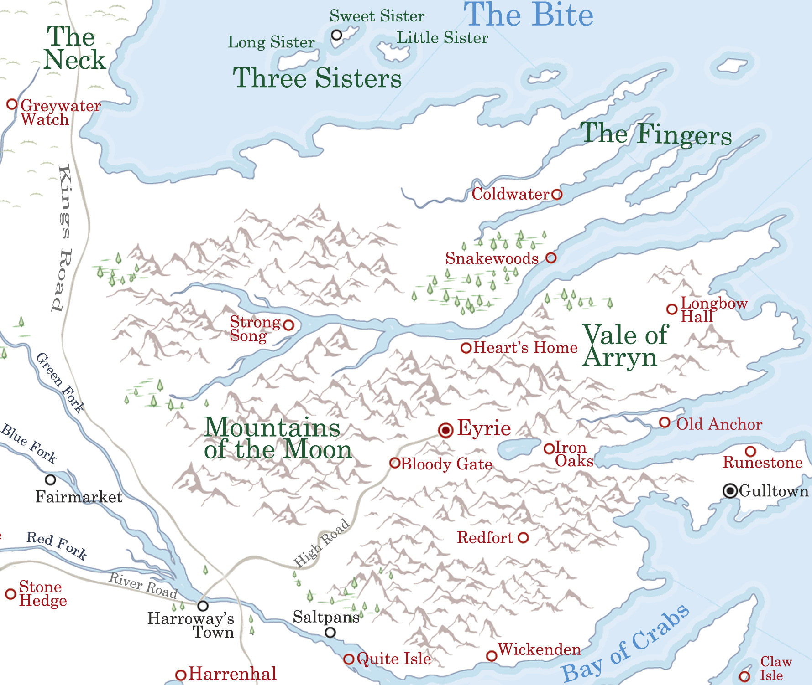

Vale of Arryn ( Vale )
Vale of Arryn or The Vale is one of the constituent regions of Westeros and was formerly a sovereign nation known as the Kingdom of Mountain and Vale before the War of Conquest. The Vale is ruled by House Arryn from the castle known as the Eyrie. Notable houses of this region include Hunter, Corbray, Redfort, and Royce. Bastards born in the Vale are given the surname Stone. The Vale is located on the eastern shore of Westeros, a tranquil land of rich black soil, wide slow-moving rivers, and hundreds of small lakes that shine like mirrors in the sun, protected on all sides by its largely impassable mountain range. The Vale tends to be slightly isolated from the rest of Westeros. The Vale’s harsh winters make travel only possible through the mountains during warmer years, and rebellious mountain clans make travel even more dangerous. The Vale can be reached through the High Road, which connects the Vale and the Riverlands, and is protected by the Bloody Gate.
The borders of the Vale are held to be the Bite to the north, the Bay of Crabs to the south, the Mountains of the Moon to the west and the Narrow Sea to the east.
The Vale consists of various regions: the Vale of Arryn itself; the Mountains of the Moon; the Fingers; the islands of the Three Sisters, The Paps, and Pebble; and the peninsula around Gulltown.
Map on Next page.
